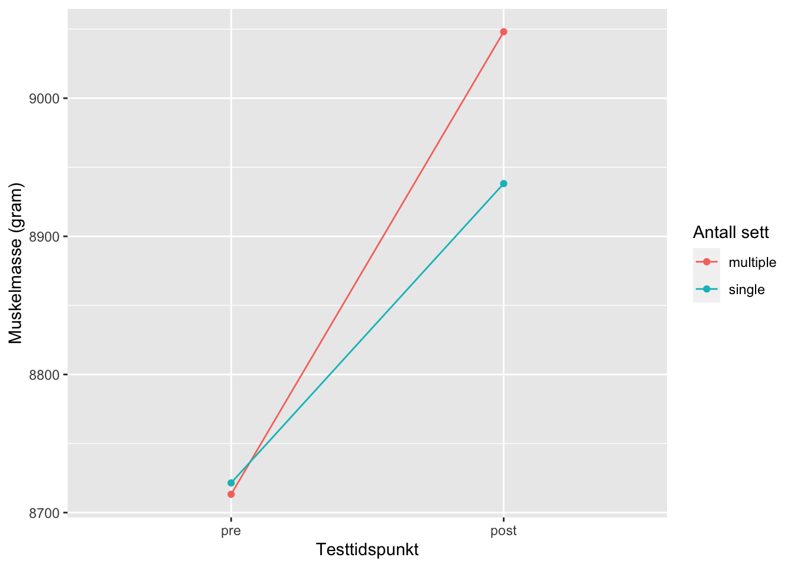
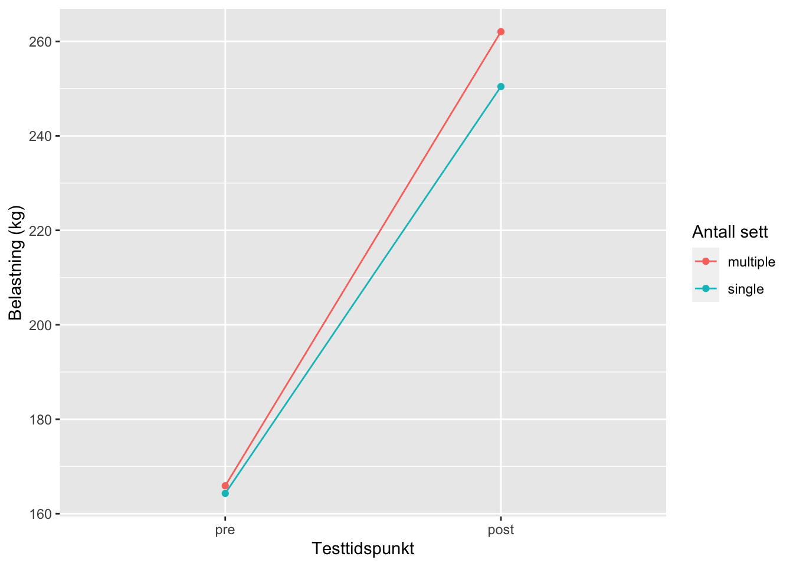

Arbeidskrav 6 - Analyse av repeterte forsøk
Introduksjon
Styrketrening har lenge vært en sentral del av trening og er for mange også en sentral del av deres hverdag. Styrke bestemmes av flere ulike faktorer, blant annet musklenes tykkelse og lengde. Styrketrening er en effektiv metode for å for å øke muskelmasse, muskelstyrke og benmasse [@Schoenfeld2019]. I tillegg er det vist at styrketrening har positiv innvirkning på flere helsemessige aspekter, som blant annet hjerte-kar-sykdommer, vektkontroll og bentetthet [@Krieger2009].
Treningsvolum sier noe om hvor mye man trener. Ofte regnes det ut ifra antallet effektive sett, og deres vekt og repetisjoner [Schoenfeld2019]. Treningsvolum ses gjerne på som veiledende utifra hva slags type styrketrening man trener og hva som er målet med treningen [@Ratamess2009; @Carpinelli1998]. Trening med høyere volum kalles hypertrofi, og kjennetegnes blant annet av et høyt metabolsk stress [@Baz-Valle2022]. Denne typen trening resulterer ofte i større vekst i muskelmasse, som på sin side er mengden skjellettmuskulatur i kroppen [@Schoenfeld2019]. Det er flere måter å trene styrketrening på for å øke muskelstyrke [@Ratamess2009]. Muskelstyrke bestemmes av både nevrale, muskulære og biomekaniske forhold. I dette tilfellet vil vi se nærmere på de muskulære forholdene, som er med på å avgjøre hvor mye kraft muskelen klarer å generere .
Formålet med denne studien er å se på endringene i muskelstyrke og muskelmasse fra pre-test og post-test, der deltakerne trente med ett og tre sett.
Metode
Deltakere
Deltakerne i studien bestod av 41 røykfrie kvinner og menn i alderen 18-40 år. Studien stilte ulike krav til deltakerne, og de ble rekruttert utifra bestemte eksklusjonskriterier. Disse kriteriene var hhv intoleranse mot lokalbedøvelse, treningshistorikk med mer enn 1 ukentlig styrketreningsøkt i løpet av de siste 12 månedene før intervensjonen, nedsatt muskelstyrke grunnet tidligere eller nåværende skade og inntak av reseptbelagte medisikamenter som kunne forstyrre intervensjonen og treningstilpasningen. I dataanalysen ble syv deltakere eksludert da de ikke gjennomførte 85% av de planlagte treningsøktene. Her ble grunner som smerter og vanskeligheter med å overholde protokollen trukket frem. Alle deltakerne kunne rapportere tidligere erfaring med sportsaktiviteter, og 20 av de oppga at de var engasjert i fysisk aktivitet ved påmeldingstidspunktet. Av disse utførte 10 stk sporadisk styrketrening med én eller færre økter i uken.
Studieoversikt
Intervensjonen bestod av 12 uker fullkroppstrening. For å skille mellom treningsvolumet hos hver enkelt deltaker ble øvelsene beinpress, legcurl og kneekstensjon utført unilateralt i den gitte rekkefølgen. Det ble randomisert hvilket ben hos deltakerne som skulle ta ett og hvilket som skulle ta tre sett. På denne måten fikk deltakerne utført protokollen for begge sett. Muskelstyrkene til deltakerne ble målt ved oppstart, i uke 3, uke 5, uke 9 og ved endt intervensjon. Kroppssammensetningen ble målt både før og etter intervensjonen med DXA-skanning.
Protokoll
For alle treningsøktene ble det gjennomført en standardisert oppvarmingsrutiner bestående av 5 minutter sykkel (RPE på 12-14), 10 repetisjoner av push-ups, sit-ups, rygghev og knebøy med kroppsvekt og avsluttende ett sett med 10 repetisjoner av øvelesene gitt i protokollen (belastning 50% av 1RM). Styrkeøvelsene ble gjennomført som enten ett sett eller tre sett per øvelse, avhengig av hva delakeren har fått tildelt. Enkle serier ble utført mellom det 2. og 3. settet i protokollen. Etter benøvelsene utførte deltakerne to sett av bilateral benkpress, nedtrekk og enten skulderpress eller sittende roing. Pausen mellom settene lå gjennomgående på 90-180 sekunder.
Intensiteten på treningen hadde en gradvis økning med 10RM de første to ukene, deretter 8RM de neste tre og 7RM de siste syv ukene. For å tilpasse treningsprogrammet til deltakerne selv ble noen økter gjennomført uten tilsyn. 91% av øktene ble derimot gjennomført med tilsyn. Fra den niende økten ble én av de tre ukentlige øktene gjort med redusert belastning (tilsvarende 90% av forrige økt med samme antall repetisjoner). For å bidra til rask restitusjon ble fikk deltakerne en standardisert drikke etter hver økt, bestående av 0.15 g protein, 11.2 g karbohydrat og 0.5 g fett per kg kroppsvekt.
Maksimal styrke ble vurdert som 1RM (repetisjonmaksimum) i unilateralt benpress og kneekstensjon. Testen begynte med en spesifikk oppvarming før hver øelse som besto av 10, 6 og 3 repetisjoner ved en belastning på 50, 75 og 85% av estimert 1RM. Deretter ble reell 1RM funnet ved å øke motstanden gradvis til deltakerne ikke lenger klarte å gjennomføre hele bevegelsesmønsteret. Den tyngste vellykkede belastninen ble definert som 1RM.
1RM ble ved oppstart vurdert to ganger som isokinetisk og isometrisk styrke, separert med minst fire dager. Den høyeste verdien oppnådd ble brukt i senere analyser. Styrketestene ble gjennomført etter minst 48 timer fra sist treningsøkt. En samlet måling av muselstyrke ble beergnet som et gjennomsnitt av alle tester, der alle testene ble vektlagt likt.
Dataanalyse og statistikk
Dataanalyse ble gjort i RStudio. Endringer i muskelmasse og muskelstyrke i øvelsen benpress (1RM) fra pre- til post-test ble regnet på, før det ble gjennomført en “paired t-test”. På denne måten sammenligner vi resultatene fra pre-test og post-test med ett sett og tre sett, og vi får en indikasjon på om det er en signifikant forskjell mellom testene. Signifikansnivået ble satt til p < 0.05.
Resultat
Av paired t-test-analysen fremkommer det at det er signifikant forskjell i økning i muskelmasse i underekstremitetene ved styrketrening med ett sett og tre sett fra pre-test til post-test, ettersom p-verdien = 0.03359. T-verdien, som indikerer forskjellen mellom gjennomsnittet i pre-test og post-test, er 2.1875. Frihetsgraden i denne testen er 33.
Også i analysen for muskelstyrke målt i øvelsen benpress vises det også til signifikant funn, med en p-verdi = 0.02589. Her er t-verdien = 2.344, mens frihetsgraden her er 30.
Endringer i muskelmasse
Figure 1 viser en gjennomsnittlig større økning i muskelmasse for benet som trente tre sett, sammenlignet med benet som trente med ett sett. Gjennsomnittsforskjellen mellom pre-test og post-test for de to treningsvolumene var 122.79 gram.
Endringer i muskelstyrke

Figure 2 viser hvordan styrke målt i ved 1RM i øvelsen benpress økte mer i benet som tok tre sett, kontra benet som tok ett sett. Gjennomsnittsforskjellen for de to treningsvolumene var 7.21 kg.
Diskusjon
Resultatene viser til større økning i både muskelstyrke og muskelmasse ved trening med tre sett sammenlignet med ett sett. Dette samsvarer med resultater i allerede eksisterende litteratur på området [@Krieger2009, @Carpinelli1998]. I den og den studien er det det og det som rekkes frem som den fremste årsaken til at det er sånn og sånn. I denne studien er det på sin side denne faktoren som trekkes frem. i dette tilfellet kan vi se på det og det som forklarende. Dette bygger opp under ditt og datt, og er derfor slik og slik.
Stuiens statistiske analyse viser til en t-verdi på det og det. i praksis betyr dette det og det, og vi kan anta at studien derfor er slik. Analysen viser også til en frihetsgrad på det ved det, og det ved det. Dette vitner om det og det, noe som samsvarer med studiens utvalg. Dermed er det sammenheng mellom det og det.
Styrke er indidviduelt osv. osv. Derfor er det ingen fasit på hvordan gjøre det og det. dette understrekes med de ulike resultatene fra de ulike studiene [kilde, kilde].
Resultatene viser til signifikant forskjell i både muskelmasse og muskelstyrke (benpress) ved trening med ett og tre sett i en 12 ukers intervensjon. Funnet støttes av allerede eksisterende litteratur på området []. Likevel er det studier som viser at det ikke er noe signifikant forskjell i disse faktorene ved trening av ett sett og tre sett [@Carpinelli1998].
t-test: Siden denne verdien er positiv tyder det på økning i gjennomsnitt fra start til slutt i intervensjonen. diskutere t-verdi, frihetsgrad og p-verdiene.